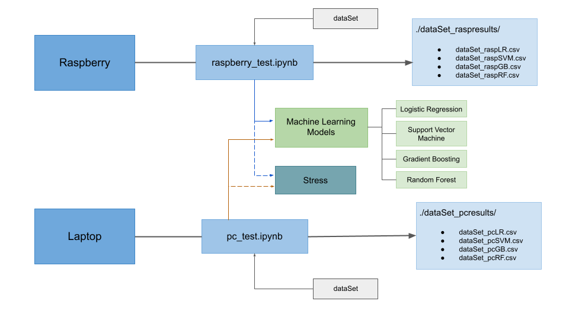

Machine Learning on devices with limited computing capacity
Nowadays Machine Learning and IoT has become some of the most developed and researched fields in technology. The amount of applications these could offer are infinite.
The need to use small devices for IoT applications leads us to consider the Raspberry as an option to carry out these tasks. Its small size and its ability to interact with the enviroment through its sensors makes it a perfect tool to develop a project of these characteristics. That is the reason why this research will evaluate this device to perform automatic learning tasks.
In order to do this it is going to be generated through scikit-learn , four differents Machine Learning models under certain computational load conditions. The selected automatic learning models are: Logistic Regression, Support Vector Machine, Gradient Boosting and Random Forest.
These machine learning models are going to be subjected to different tests in order to prove the capacity of the Raspberry Pi to know if this device is truely a good tool to develop and execute this kind of algorithms. The results of these tests are going to be compared with the results of the same automatic learning models but executed and tested in a more powerful machine. This will let us know how far is the performance of the Raspberry Pi from a higher capacity machine. The achivement of all this is going to be explained later.
Hardware Components
In order to develop this project the following hardware components were required.
Raspberry Pi 4B
Raspberry Pi 4B is a low cost credit-card sized computer, the aim of which is to make informatics accesible for everyone. Its features makes it a good choice for implementing IoT applications but its lower computational capacity may not be sufficient to carry out such tasks. That is what we are trying to dicover through this research work.
Some of it's components are:BME280 Sensor
Sensor developed by Bosh which provide information about temperature, atmosferic pressure and relative humidity.
LDR Sensor
This is a photoresistor so it will detect if there is light or not on its enviroment. To be able to use this with the Raspberry Pi is necesary to connect a conversor to it, in this project it is used the HW-103 conversor.
HP 15s-fq1008ns Laptop
In order to compare the Raspberry Pi results with a higher capacity machine it is going to be used a Laptop. The laptop used is an HP 15s-fq1008ns with 8 cores in total. It has Ubuntu 20.04 as Operative System. With this will have real knowledge of how well or badly the Raspberry Pi is performing.
Test Structure
As mentioned before, to test the potential of the Raspberry Pi, four diferent kinds of Machine Learning models are going to be trained and tested with differents dataSets.
Each model will be subjected to four tests. The difference between those tests is the number of cores that are going to be stressed. The laptop will also be subjected to these four tests to compare both results but with some modifications. As mentioned before the laptop has in total 8 cores, twice as many as the Raspberry has, so in order to put both machines in the same computational load situation, the number of stressed cpus change.
The defined testing levels are:
Idle Level. The Raspberry Pi or laptop is not subjected to any kind of extra stress.
Low Level. Only one of the cores of the Raspberry Pi is stressed. While in the laptop two cores are stressed.
Middle Level. Two of the Raspberry Pi cpus are going to be stressed, in the laptop four cores. In both machines there are stressed half of the total number of cores.
High Level. All the cores of the Raspberry Pi, which are four, and laptop, which are eight, will be exposed to higher computational load.
From each of the test it is going to be obtained some relevant information that will allow us to evaluate the Raspberry Pi as an optimal dispositive for Machine Learning applications or not. The above image shows the general architecture of the tests. As it can be seen on it, the information obtained from each model will be stored on its own file.
DataSets
A total of three different datasets were used to train and test the models. Two of them composed of synthetic data and the last one was made with sensed data.
Room Occupancy DataSet
This dataset, obtained from Kaggle, provides information about temperature, light, humidity and CO2. The last column of the dataset provides information of the state of the room, if it is occupied or not. In total, the dataset has 20560 samples of an office room of 5.85mx3.50mx3.53m.
The models trained with this dataset will be able to predict if the room is empty or if there is someone in it.
KDD Cup 1999 Data
The Kdd Cup 1999 dataset was created to use it in The Third International Knowledge Discovery and Data Mining Tools Competition, to create a predictive model capable of distinguish between bad connections and good connections. This can be obtained from the Kaggle web page.
This dataset has a huge number of total lines, in this project we are going to use only the 20% of the total data set, which are about 988040 lines of samples. In order to use this dataset is necessary to pre-process the data and remove some lines or columns which may difficult the trainning of the model.
Raspberry Pi sensors dataSet
As seen before in this projects are used two sensors. With the data provided by these sensors it has been created a total new dataset that will contain information of light, temperature, relative humidity and pressure. Storing this data and knowing if there are people in the room where the sensors are located, we can create another dataset that will train a model to know by the sensors measures, if there is someone in the room or not. So this dataset will allow us to train a model similar to the one that we can ontain using the Room Occupancy dataset but with our own information.
In the next picture you can see an example of the sensor data recorded durin 2h 40min in a room of 8m2. The zones with gray background are the moments of time where there was someone in the room.
Results
Bellow are some charts that show the most relevant results of the tests.
From this data we can find out what percentage the Raspberry Pi is slower than the laptop.
Conclusions
With the results obtained is clear that the Raspberry Pi behaviour is worse than the performance of the laptop, it takes significantly longer to finish executing than the other machine. However it has been able to complete the task assigned even in the worst cases. So we have seen that the Raspberry Pi is more powerful than it appeared at first glace, even it has been able to obtain its own dataset from the data of the sensors, an IoT device-like behaviour.
Thanks to the test carried out during this project we can conclude that the Raspberry Pi can develop these kind of task without nothing to envy to the Laptop. We are talking about a device with a small size, able to interact with its surround and with lower power consumption, which can be easily implementend anywhere. Being a perfect candidate in which implement IoT and Machine Learning applications.
For a deeper explanation you can see the memory of this project where all this is explained and a more detailed analysis is made of the results obtained.